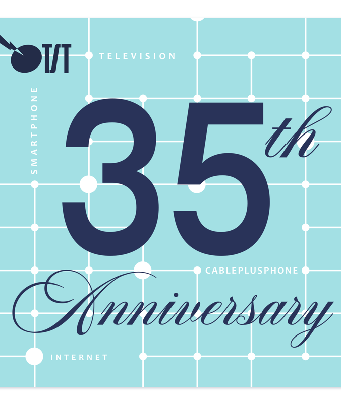

35周年を迎えるにあたり、皆様への感謝とこれからの想いをお伝えいたします。
新緑の候、皆様におかれましては益々ご清栄のこととお慶び申し上げます。
平素は、となみ衛星通信テレビ株式会社の事業に格別のご高配を賜り、
厚く御礼申し上げます。
さて、弊社は本年2026年6月1日をもちまして、開局35周年を迎えることとなりました。
1991年の開局以来、今日まで事業を継続・発展させることができましたのは、
ひとえに地域の皆様の温かいご支援と、関係各位の多大なるお力添えの賜物であり、
心より深く感謝申し上げます。
この35年間で、私たちを取り巻く通信・放送の環境は劇的な変化を遂げました。
多チャンネル放送の提供から始まり、インターネット、ケーブルスマホ、
そして光ファイバー網の整備と、
地域の皆様のニーズにお応えするべく、常にサービスの拡充に努めてまいりました。
開局35周年という節目を契機として、社員一同決意も新たに、
となみ野エリアの未来を繋ぐ「総合情報通信インフラ」として、
更なる飛躍を目指してまいります。
今後とも、変わらぬご指導、ご鞭撻を賜りますようお願い申し上げます。

テレビ・インターネット・ケーブルプラス電話・スマートフォン。
35年で築いてきた「つながり」をかたちにした、35周年記念ロゴです。
散村が広がるとなみ野に、衛星通信時代の旗手として産声をあげたのが1991年。
地域の暮らしの「あたりまえ」を、ひとつずつ進化させてきました。
積み重ねた一日一日が、地域の「あたりまえ」をかたちづくってきました。
放送・通信・モバイル・電力まで。となみ野の暮らしを支える6つのサービス。
地上波・BS・CSに加え、4K/8Kパススルー対応。9chのTSTコミュニティチャンネルで、となみ野3市の地域情報を発信。
02家庭まで届く光ファイバー。仕事・暮らし・娯楽、すべてに余裕のあるスピードを。
03ドコモ回線の安心と、地域窓口でのていねいなサポート。月々の通信費もぐっと身近に。
使いやすさそのままに、固定電話料金をお得に。となみ野の安心の連絡網として。
北陸電力との連携、関連会社「なんとエナジー」を通じて、地域の電気もよりお得に。
ICTとデジタルと、地域密着ならではのヒトによるサポートを組み合わせ、地域の皆様の暮らしを更に便利に。